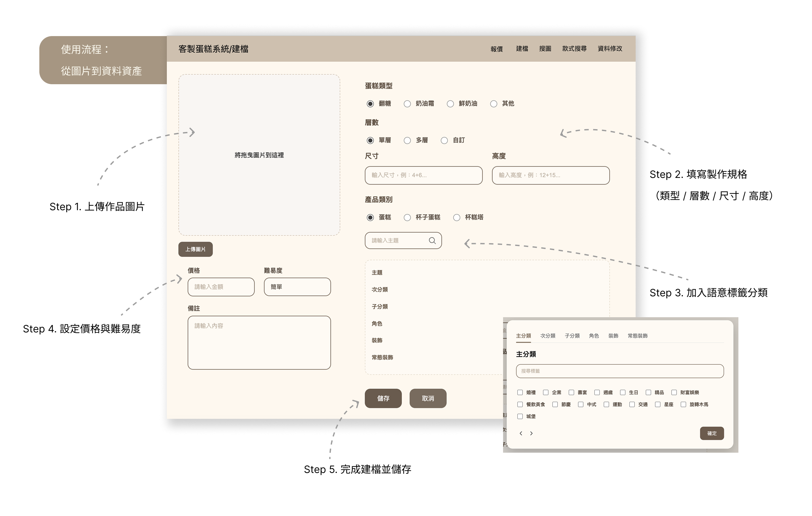

建檔
資料結構化與搜尋準確度的基礎資料層
功能流程
上傳圖片 → 選擇蛋糕類型、產品類別 → 勾選多層標籤 → 輸入價格 → 系統自動產生命名 → 寫入 CSV

分類與標籤模型設計考量
問題說明
- 客製蛋糕作品款式多變，歷史圖片常分散於不同資料夾，命名規則不一致，導致尺寸、價格與設計元素難以回溯。
- 分類高度依賴個人經驗，新人難以快速建立搜尋與報價判斷能力。
設計決策
- 主分類以主題場景為主，避免高重疊元素作為主類
- 採主分類/次分類/子分類/角色/裝飾/常態裝飾標籤多維結構
- 關鍵欄位使用固定選項，確保團隊標籤一致性
- 低頻裝飾保留自由標籤輸入，維持描述彈性
- 蛋糕類型與產品類別分類，避免資料夾重複與圖片膨脹
- 採結構化檔名＋資料夾分類雙軌策略，確保系統失效時仍可人工維運
技術重點
- CSV結構化資料模型
- JSON標籤層級設計
- 檔名規則自動產生邏輯
- 建檔二次確認機制防誤寫
- 欄位結構與 AI 搜尋模型共用資料欄位設計
價值說明
將原本依賴記憶與人工經驗的建檔流程標準化，使資料可搜尋、可比對、可回溯，降低人員依賴並提升整體報價與查詢效率。
搜圖
相似圖片搜尋系統

圖片搜尋與相似比對
問題說明
- 相似款式分散於不同資料夾，缺乏跨分類搜尋機制，容易漏找或誤判。
- 客戶以圖片詢問為主，人工翻找歷史作品效率低且容易漏判，圖片長期未被查詢時，也常因分類位置不明而難以定位。
- 作品分類高度依賴個人經驗判斷，新人在不熟悉內部圖片體系的情況下，搜尋與回覆成本極高，導致報價流程過度集中於資深人員。
- 大量詢價需逐筆人工文字回覆，缺乏半自動化報價輔助機制，客服處理時間成本高。
設計決策
- 以圖片特徵向量比對取代資料夾人工翻找
- 搜尋建立於建檔標籤與結構化資料基礎
- 搜尋結果同步顯示尺寸與價格資訊
- 支援拖曳圖片快速查詢流程
- 搜尋流程與報價流程直接銜接
技術重點
- CLIP圖像向量embedding
- 向量相似度排序比對
- 本地端向量索引
- 與 CSV 結構化資料聯動顯示
價值說明
將圖片款式比對流程系統化，大幅縮短搜尋與報價判斷時間，降低經驗依賴並提升客服回覆效率。
款式搜尋
以分層分類與標籤快速定位款式
本模組以建檔階段所建立的分類與標籤資料為基礎，採用「主分類 → 子分類 → 條件標籤」的分層篩選機制，透過逐步縮小搜尋範圍，協助使用者快速定位相似款式。
在實際使用情境中，款式搜尋的目的並非單純資料查找，而是為了解決客服在與客人溝通時，缺乏即時提供「視覺參考圖片」的問題。由於多數客人難以用文字精準描述需求，因此圖片成為主要的溝通媒介。
基於此，我將本功能設計為一個「以圖片為主的溝通工具」，讓客服能快速瀏覽並挑選相似款式，同時於列表中直接呈現尺寸與價格資訊，提升回覆效率並加速客戶決策流程。
此外，系統亦支援關鍵字搜尋功能，可直接輸入裝飾元素或主題標籤（如：兔子、壽桃、翻糖花等）進行查找，提升在大量歷史作品中的搜尋效率與準確度。

結構化條件搜尋
問題說明
- 客製化作品元素組合高度變化，單一資料夾分類難以支援多條件查找。
- 相同裝飾元素會跨主題重複出現，僅靠主題分類容易漏找。
- 人工翻找圖片效率低，且高度依賴資深人員經驗記憶。
- 客戶多以關鍵裝飾或圖片描述詢問，傳統分類方式難以快速回應。
設計決策
- 採主分類→子分類→多標籤結構分層篩選
- 分類負責「穩定主題範圍」，標籤負責「細部元素描述」
- 支援多條件交叉篩選縮小結果範圍
- 提供關鍵字搜尋框，直接查找裝飾與元素標籤
- 搜尋結果採「圖片優先、資訊收合」的版面設計
技術重點
- 分層分類資料模型
- 多標籤欄位交叉比對
- 關鍵字標籤搜尋
- 結構化條件篩選機制
價值說明
將原本依賴人工記憶的翻找流程轉為結構化搜尋流程，即使不熟悉資料庫結構的新進人員，也能透過分類與標籤快速找到相似款式，提升回覆效率。